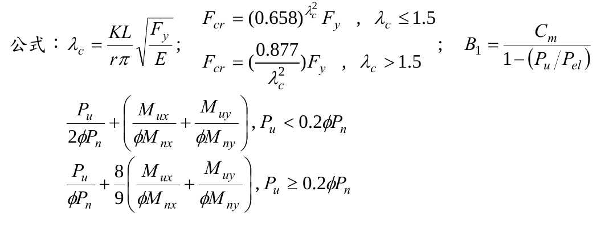
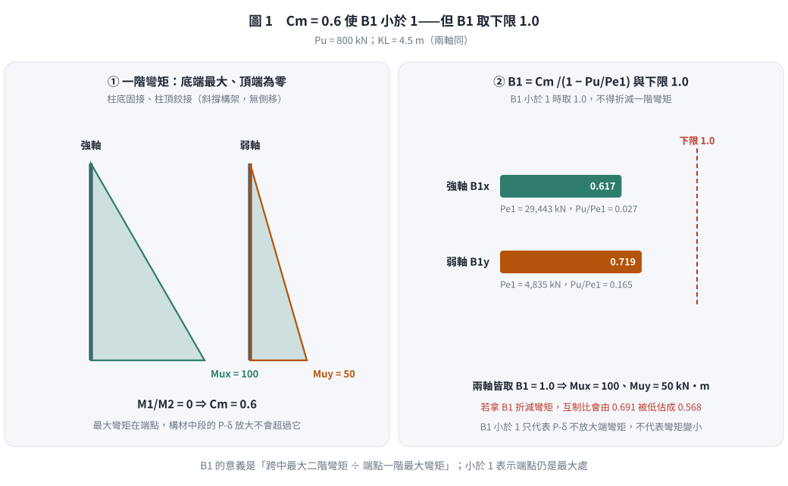
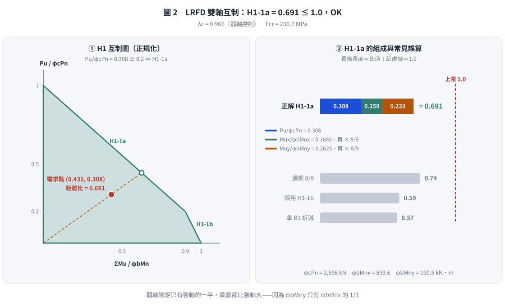

📄 題目正本：考卷原文・附圖・判讀清單（待確認）
SS-2012-3 題目正本
本檔只記錄考卷上寫了什麼、圖上畫了什麼，不含任何解法。解析見同資料夾
SS-2012-3.md。
判讀清單經使用者確認前，狀態為「待確認」；確認後本檔原則上不再修改（改動須回考卷原圖並記 log）。
| 項目 | 內容 |
|---|---|
| 考卷 | raw/exams/SS-2012_鋼結構設計.pdf 第 1 頁（全一張・正面），第三題 |
| 考年 | 民國 101 年（2012） |
| 配分 | 25 分 |
| 附圖 | 無；題內公式截圖 SS-2012-3-eqn-1.png |
| 判讀狀態 | 待確認（轉錄 2026-11-02，PyMuPDF 110 dpi 全頁目視＋抽出文字核對，盲讀後才比對既有解析） |
1. 考卷原文（逐字）
三、有一鋼造斜撐構架系統，經過載重組合分析後得柱軸力 800 kN，柱底端強軸彎矩為 100 kN-m，弱軸彎矩為 50 kN-m，柱底端為固接端，另一端為鉸接端，此柱在強軸及弱軸的有效長度（$KL$）均為 4.5 m，請利用極限設計法（LRFD）檢核此柱所承受之軸力彎矩需求強度比是否符合設計需求。（25 分）
柱為 ASTM A572 Gr.50 之 W14×68，鋼材及斷面性質如下：
$F_y$ = 350 MPa
W14×68 型鋼性質：$Z_x$ = 1884512 mm³, $Z_y$ = 604683 mm³, $A$ = 12903 mm²
$r_x$ = 153 mm, $r_y$ = 62 mm公式：（見 §2）
2. 考卷給的公式、附表與參數
- 題文：$P_u$ = 800 kN；柱底 $M_{ux}$ = 100 kN-m、$M_{uy}$ = 50 kN-m；$KL$ = 4.5 m（兩軸）；$F_y$ = 350 MPa；$Z_x$、$Z_y$、$A$、$r_x$、$r_y$。
- 題內「公式」照錄：
$$\lambda_c = \frac{KL}{r\pi}\sqrt{\frac{F_y}{E}}\;;\qquad F_{cr} = (0.658)^{\lambda_c^2}F_y,\ \lambda_c \le 1.5\;;\quad F_{cr} = \left(\frac{0.877}{\lambda_c^2}\right)F_y,\ \lambda_c > 1.5\;;\qquad B_1 = \frac{C_m}{1 - (P_u/P_{el})}$$
$$\frac{P_u}{2\phi P_n} + \left(\frac{M_{ux}}{\phi M_{nx}} + \frac{M_{uy}}{\phi M_{ny}}\right),\ P_u < 0.2\phi P_n$$
$$\frac{P_u}{\phi P_n} + \frac89\left(\frac{M_{ux}}{\phi M_{nx}} + \frac{M_{uy}}{\phi M_{ny}}\right),\ P_u \ge 0.2\phi P_n$$

- 兩條交互式沒有寫「≤ 1.0」（照考卷原樣）。
- 沒有給 $E$、$\phi$、$C_m$ 式、$P_{el}$ 式、柱實際長度與側向無支撐長度，也沒有給 $S_x$、$b_f$、$t_f$ 等寬厚比資料。
- 卷首注意事項：㈠可以使用電子計算器；㈡不必抄題；㈢本試題之相關公式、物理常數、符號意義及設計參數未提及時，請自行合理推斷與假設。
3. 附圖
本題無附圖。
4. 判讀清單
「把握」標不確定者請優先確認；解讀類項目（題目用字的意思）另標「解讀」。
| # | 項目 | 判讀 | 圖上／題文依據 | 把握 |
|---|---|---|---|---|
| 1 | 彎矩分布 | 只給柱底彎矩；上端鉸接 → 上端彎矩 0，$M_1/M_2 = 0$（兩軸） | 題文「柱底端為固接端，另一端為鉸接端」 | 確定（解讀） |
| 2 | 構架型式 | 斜撐構架 → 不側移，只有 $B_1$（題只給 $B_1$） | 題文 | 確定（解讀） |
| 3 | 跨間載重 | 題未提跨間橫向載重 → 視為無 | 題文 | 確定（解讀） |
| 4 | 有效長度 | $K_xL = K_yL$ = 4.5 m（題給 $KL$，未給 $K$ 與 $L$） | 題文 | 確定 |
| 5 | 撓曲強度 | 只給 $Z_x$、$Z_y$；未給 LTB 所需資料 → 考生須自行假設（例如 $M_n = M_p$） | 題文 | 確定（解讀） |
| 6 | 所求 | 交互作用比（需求強度比）是否 ≤ 1.0 | 題文 | 確定 |
轉錄：2026-11-02（SS-U1-3 題目正本推廣・批 2）
考題編號：SS-2012-3
主分類： SS-U1-3 梁柱桿件
副分類： SS-U1-1 拉力及壓力桿件
設計法： LRFD
標籤： 梁柱桿件 P-M互制 雙軸彎矩 斜撐構架 B1放大法 弱軸挫屈 固接柱 有效長度
1. 原始題目重述 (Problem Restatement)
題幹： 有一鋼造斜撐構架系統，經過載重組合分析後得柱軸力 800 kN，柱底端強軸彎矩為 100 kN·m，弱軸彎矩為 50 kN·m，柱底端為固接端，另一端為鉸接端，此柱在強軸及弱軸的有效長度（KL）均為 4.5 m，請利用極限設計法（LRFD）檢核此柱所承受之軸力彎矩需求強度比是否符合設計需求。（25 分）
給定條件：
| 項目 | 數值 |
|---|---|
| 鋼材 | ASTM A572 Gr.50 |
| $F_y$ | 350 MPa |
| $E$ | 200,000 MPa |
| $P_u$（軸壓力，已因數化） | 800 kN |
| $M_{ux}$（強軸彎矩，已因數化） | 100 kN·m（柱底固接端） |
| $M_{uy}$（弱軸彎矩，已因數化） | 50 kN·m（柱底固接端） |
| 柱底端條件 | 固接（有彎矩） |
| 柱頂端條件 | 鉸接（無彎矩） |
| 有效長度 $KL$（強弱軸） | 4.5 m |
W14×68 斷面性質（題目提供）：
| 性質 | 數值 |
|---|---|
| $Z_x$（強軸塑性斷面模數） | 1,884,512 mm³ |
| $Z_y$（弱軸塑性斷面模數） | 604,683 mm³ |
| $A$（斷面積） | 12,903 mm² |
| $r_x$（強軸迴旋半徑） | 153 mm |
| $r_y$（弱軸迴旋半徑） | 62 mm |
規範公式（題目提供）：
$$\lambda_c = \frac{KL}{r\pi}\sqrt{\frac{F_y}{E}}; \quad F_{cr} = (0.658)^{\lambda_c^2} F_y \ (\lambda_c \leq 1.5); \quad F_{cr} = \frac{0.877}{\lambda_c^2} F_y \ (\lambda_c > 1.5)$$
$$B_1 = \frac{C_m}{1 - P_u/P_{el}}$$
$$\frac{P_u}{2\phi P_n} + \left(\frac{M_{ux}}{\phi M_{nx}} + \frac{M_{uy}}{\phi M_{ny}}\right), \quad P_u < 0.2\phi P_n$$
$$\frac{P_u}{\phi P_n} + \frac{8}{9}\left(\frac{M_{ux}}{\phi M_{nx}} + \frac{M_{uy}}{\phi M_{ny}}\right), \quad P_u \geq 0.2\phi P_n$$
2. 考題核心精神與出題者意圖 (Core Concepts & Examiner's Intent)
核心觀念： 本題考驗梁柱（Beam-Column）的完整 LRFD 檢核流程，包含：
1. 以弱軸（控制軸）計算柱強度 $\phi_c P_n$
2. 判斷是否需要 $B_1$ 力矩放大（斜撐構架，無側移，$B_2 = 1$）
3. 依 $P_u/\phi_c P_n$ 比值選擇正確的 P-M 互制公式
特別之處：
- 柱為固接-鉸接（底固頂鉸），單曲率，彎矩梯度 $C_m = 0.6$
- $B_1$ 計算結果 $< 1.0$，需取 $B_1 = 1.0$（不能縮減一階彎矩）
- 雙軸彎矩同時作用，必須代入互制方程
3. 解題戰略地圖與陷阱分析 (Strategic Roadmap & Trap Analysis)
作戰計畫：
Step 1: 計算 λc（弱軸控制），求 Fcr → φcPn
Step 2: 計算各軸 Pel，求 B1 → 放大彎矩（B1<1.0 取 1.0）
Step 3: 計算 φbMnx、φbMny（假設全側撐，φbMn = φbMp）
Step 4: 判斷 Pu/φcPn 比值 → 選擇 H1-1a 或 H1-1b
Step 5: 代入 P-M 互制公式，輸出 D/C 比值
三大陷阱：
-
⚠️ 陷阱 1：控制軸判斷 — 強弱軸 KL 相同，但弱軸 $r_y = 62$ mm << 強軸 $r_x = 153$ mm，弱軸細長比大得多，弱軸挫屈控制。
-
⚠️ 陷阱 2：B1 < 1.0 的處理 — 本例 $C_m = 0.6$，算出的 $B_1 < 1$，必須取 $B_1 = 1.0$，不可因此縮減彎矩設計值。
-
⚠️ 陷阱 3：P-M 公式選擇 — 必須先算 $P_u/\phi_c P_n$：若 $\geq 0.2$ 用 H1-1a（含 8/9 係數），若 $< 0.2$ 用 H1-1b（除以 2 的弱化版）。
3.5 變數層次分析（Variable Hierarchy Analysis）
複習提示：解題後，在每個卡住的知識點「卡關?」欄標記
⚠；第二次複習時只看有⚠的項目。
最終目標： 對 W14×68 (A572 Gr.50) 梁柱進行 LRFD P-M 互制檢核，確認 D/C 比值 ≤ 1.0
主要公式（$\boxed{\phantom{x}}$ = 未知，待推導）
$$\boxed{\lambda_c} = \frac{KL}{r_y \pi}\sqrt{\frac{F_y}{E}} \quad \Rightarrow \quad \boxed{F_{cr}} = (0.658)^{\lambda_c^2} F_y$$
$$\boxed{\phi_c P_n} = 0.85 \times F_{cr} \times A$$
$$B_1 = \frac{C_m}{1 - P_u/P_{el}} \geq 1.0$$
$$\frac{P_u}{\phi_c P_n} + \frac{8}{9}\left(\frac{M_{ux}}{\phi_b M_{nx}} + \frac{M_{uy}}{\phi_b M_{ny}}\right) \leq 1.0 \quad (P_u \geq 0.2\phi_c P_n)$$
L1：題目直接給定
| 符號 | 數值 | 說明 |
|---|---|---|
| $F_y$ | 350 MPa | A572 Gr.50 |
| $E$ | 200,000 MPa | 彈性模數 |
| $P_u$ | 800 kN | 因數化軸壓力 |
| $M_{ux}$ | 100 kN·m | 因數化強軸彎矩（柱底） |
| $M_{uy}$ | 50 kN·m | 因數化弱軸彎矩（柱底） |
| $KL$（強弱軸） | 4.5 m | 有效長度（題目直接給） |
| $Z_x$ | 1,884,512 mm³ | 強軸塑性斷面模數 |
| $Z_y$ | 604,683 mm³ | 弱軸塑性斷面模數 |
| $A$ | 12,903 mm² | 斷面積 |
| $r_x$ | 153 mm | 強軸迴旋半徑 |
| $r_y$ | 62 mm | 弱軸迴旋半徑 |
| 邊界條件 | 底固接、頂鉸接 | 單曲率，$C_m = 0.6$ |
L2：需知識點推導
Step 1：控制軸判斷與柱強度 $\phi_c P_n$
| 符號 | 公式 / 來源 | 卡關? |
|---|---|---|
| $(KL/r)_x$ | $4500/153 = 29.41$ | |
| $(KL/r)_y$ | $4500/62 = 72.58$（控制，較大） | |
| $\lambda_c$ | $(72.58/\pi)\sqrt{350/200{,}000} = 0.966$ | |
| $F_{cr}$ | $(0.658)^{0.933} \times 350 = 236.6$ MPa | |
| $\phi_c P_n$ | $0.85 \times 236.6 \times 12{,}903 = 2{,}594$ kN |
Step 2：$B_1$ 力矩放大係數
| 符號 | 公式 / 來源 | 卡關? |
|---|---|---|
| $C_m$ | $0.6 - 0.4(M_1/M_2) = 0.6$（$M_1 = 0$ 頂鉸） | |
| $P_{el,x}$ | $\pi^2 E I_x/(KL)^2 = 29{,}443$ kN | |
| $P_{el,y}$ | $29{,}443 \times (I_y/I_x) = 4{,}831$ kN | |
| $B_{1,x}$ | $0.6/(1-800/29{,}443) = 0.617 < 1.0$ → 取 $B_1 = 1.0$ | |
| $B_{1,y}$ | $0.6/(1-800/4{,}831) = 0.719 < 1.0$ → 取 $B_1 = 1.0$ |
Step 3：彎曲強度與 P-M 互制
| 符號 | 公式 / 來源 | 卡關? |
|---|---|---|
| $\phi_b M_{nx}$ | $0.9 \times F_y \times Z_x = 593.6$ kN·m（假設全側撐） | |
| $\phi_b M_{ny}$ | $0.9 \times F_y \times Z_y = 190.5$ kN·m | |
| $P_u/\phi_c P_n$ | $800/2{,}594 = 0.308 \geq 0.2$ → 用 H1-1a | |
| D/C 比 | $0.308 + (8/9)(0.169 + 0.263) = 0.691 < 1.0$ ✓ |
L3：深層知識（不懂就卡住）
| 知識點 | 說明 | 卡關? |
|---|---|---|
| P-M 互制 H1-1a vs H1-1b | $P_u/\phi_c P_n \geq 0.2$ 用 H1-1a（含 8/9 係數）；< 0.2 用 H1-1b（$P_u/2\phi P_n$ 項） | |
| 弱軸控制判斷 | $KL$ 相同時，$r_y < r_x$ → 弱軸細長比較大 → 弱軸挫屈控制 $\phi_c P_n$ | |
| B1 放大係數 | $B_1 < 1.0$ 時必須取 $B_1 = 1.0$，不可縮減一階彎矩 | |
| $C_m$ 計算 | 固接-鉸接柱（$M_1/M_2 = 0$）→ $C_m = 0.6$；雙固（等曲率）→ $C_m = 0.85$ | |
| 斜撐構架無 B2 | 斜撐系統阻止側移，$B_2 = 1.0$；只需計算 $B_1$ (P-δ 效應) |
4. 步驟化詳細計算過程 (Step-by-Step Detailed Calculation)
Step 1：計算柱軸壓強度 φcPn
比較各軸細長比：
$$\frac{KL_x}{r_x} = \frac{4500}{153} = 29.41$$
$$\frac{KL_y}{r_y} = \frac{4500}{62} = 72.58 \quad \leftarrow \text{控制（較大）}$$
計算 λc（弱軸控制）：
$$\lambda_c = \frac{KL}{r_y \pi}\sqrt{\frac{F_y}{E}} = \frac{72.58}{\pi}\sqrt{\frac{350}{200{,}000}}$$
$$= \frac{72.58}{3.14159} \times \sqrt{0.00175} = 23.10 \times 0.04183 = \boxed{0.966}$$
$$\because \lambda_c = 0.966 < 1.5 \quad \rightarrow \text{非彈性挫屈}$$
計算 Fcr：
$$F_{cr} = (0.658)^{\lambda_c^2} \cdot F_y = (0.658)^{0.966^2} \cdot 350 = (0.658)^{0.933} \cdot 350$$
計算 $(0.658)^{0.933}$：
$$= e^{0.933 \times \ln(0.658)} = e^{0.933 \times (-0.4193)} = e^{-0.391} = 0.676$$
$$F_{cr} = 0.676 \times 350 = 236.6 \text{ MPa}$$
計算 φcPn（取 φc = 0.85）：
$$\phi_c P_n = 0.85 \times F_{cr} \times A = 0.85 \times 236.6 \times 12{,}903$$
$$= 0.85 \times 3{,}052{,}258 = 2{,}594{,}419 \text{ N} = \boxed{2{,}594 \text{ kN}}$$
Step 2：B1 力矩放大係數計算
斜撐構架中無側移（$B_2 = 1.0$），僅考慮 P-δ 效應的 $B_1$。
柱底固接、頂鉸接，彎矩由底端（$M_2 = 100$ kN·m）線性遞減至頂端（$M_1 = 0$）：
$$C_m = 0.6 - 0.4 \times \frac{M_1}{M_2} = 0.6 - 0.4 \times \frac{0}{100} = 0.6$$
計算 Pel（彈性歐拉挫屈載重）：
強軸慣性矩：
$$I_x = r_x^2 \times A = 153^2 \times 12{,}903 = 23{,}409 \times 12{,}903 = 3.020 \times 10^8 \text{ mm}^4$$
$$P_{el,x} = \frac{\pi^2 E I_x}{(KL)^2} = \frac{9.8696 \times 200{,}000 \times 3.020 \times 10^8}{4500^2} = \frac{5.962 \times 10^{14}}{2.025 \times 10^7} = \boxed{29{,}443 \text{ kN}}$$
弱軸慣性矩：
$$I_y = r_y^2 \times A = 62^2 \times 12{,}903 = 3{,}844 \times 12{,}903 = 4.958 \times 10^7 \text{ mm}^4$$
$$P_{el,y} = P_{el,x} \times \frac{I_y}{I_x} = 29{,}443 \times \frac{4.958 \times 10^7}{3.020 \times 10^8} = 29{,}443 \times 0.1642 = \boxed{4{,}831 \text{ kN}}$$
計算 B1：
強軸：
$$B_{1,x} = \frac{C_m}{1 - P_u / P_{el,x}} = \frac{0.6}{1 - 800/29{,}443} = \frac{0.6}{1 - 0.0272} = \frac{0.6}{0.9728} = 0.617 < 1.0$$
弱軸：
$$B_{1,y} = \frac{C_m}{1 - P_u / P_{el,y}} = \frac{0.6}{1 - 800/4{,}831} = \frac{0.6}{1 - 0.1656} = \frac{0.6}{0.8344} = 0.719 < 1.0$$
策略註解：兩軸 $B_1$ 均小於 1.0，必須取 $B_1 = 1.0$，不可縮減一階彎矩，否則設計偏危險。
放大後設計彎矩：
$$M_{ux}' = \max(B_{1,x}, 1.0) \times M_{ux} = 1.0 \times 100 = \boxed{100 \text{ kN}\cdot\text{m}}$$
$$M_{uy}' = \max(B_{1,y}, 1.0) \times M_{uy} = 1.0 \times 50 = \boxed{50 \text{ kN}\cdot\text{m}}$$

圖 1 固接－鉸接柱的一階彎矩與 $B_1$。兩軸 $B_1$ 都小於 1，取 1.0；這張圖攔的是拿 $B_1 < 1$ 去折減一階彎矩——互制比會被低估成 0.568。
Step 3：計算彎曲強度 φbMnx、φbMny
斜撐構架中柱有樓板提供足夠的側向支撐（本題無特別說明不穩定），取全截面塑性彎矩：
$$\phi_b M_{nx} = \phi_b \cdot F_y \cdot Z_x = 0.9 \times 350 \times 1{,}884{,}512$$
$$= 0.9 \times 659{,}579{,}200 = 593{,}621{,}280 \text{ N}\cdot\text{mm} = \boxed{593.6 \text{ kN}\cdot\text{m}}$$
$$\phi_b M_{ny} = \phi_b \cdot F_y \cdot Z_y = 0.9 \times 350 \times 604{,}683$$
$$= 0.9 \times 211{,}639{,}050 = 190{,}475{,}145 \text{ N}\cdot\text{mm} = \boxed{190.5 \text{ kN}\cdot\text{m}}$$
Step 4：判斷 P-M 互制公式
$$\frac{P_u}{\phi_c P_n} = \frac{800}{2{,}594} = 0.308 \geq 0.2$$
→ 使用 H1-1a（AISC/LRFD）：
$$\frac{P_u}{\phi_c P_n} + \frac{8}{9}\left(\frac{M_{ux}}{\phi_b M_{nx}} + \frac{M_{uy}}{\phi_b M_{ny}}\right) \leq 1.0$$
Step 5：P-M 互制方程檢核
$$= \frac{800}{2{,}594} + \frac{8}{9}\left(\frac{100}{593.6} + \frac{50}{190.5}\right)$$
$$= 0.308 + 0.889 \times (0.1685 + 0.2625)$$
$$= 0.308 + 0.889 \times 0.4310$$
$$= 0.308 + 0.383 = \boxed{0.691}$$
$$\because 0.691 < 1.0 \quad \checkmark \quad \text{符合設計需求}$$
結論： 此 W14×68 柱之軸力彎矩需求強度比（D/C Ratio）= 0.691 < 1.0，設計充裕，OK。

圖 2 H1 互制圖與 H1-1a 的組成。需求點落在 H1-1a 段，距離比 0.691；這張圖攔的是 $P_u/\phi_cP_n \geq 0.2$ 卻套 H1-1b，以及漏乘 8/9。
5. 關鍵爭議點與進階探討 (Critical Issues & Advanced Discussion)
5.1 固接-鉸接柱的 Cm 合理性
理論上，底固頂鉸的柱在均勻軸壓下，彎矩由底端最大線性遞減至頂端為零（單曲率）。$C_m = 0.6$ 是此種情況的下限值（$M_1/M_2 = 0$）。雖然 $B_1 < 1.0$，但保守規定取 $B_1 = 1.0$，符合工程保守設計原則。
5.2 強度餘裕與各分量貢獻分析
| 分量 | 需求 | 容量 | 比值 |
|---|---|---|---|
| 軸壓 $P_u/\phi_c P_n$ | 800 kN | 2,594 kN | 0.308 |
| 強軸彎曲 $M_{ux}/\phi_b M_{nx}$ | 100 kN·m | 593.6 kN·m | 0.169 |
| 弱軸彎曲 $M_{uy}/\phi_b M_{ny}$ | 50 kN·m | 190.5 kN·m | 0.263 |
| 總和（H1-1a） | 0.691 |
- 弱軸彎矩（50/190.5 = 0.263）雖然數值小，但因弱軸容量相對有限，對互制比值貢獻不亞於強軸彎矩（0.169）。
- 軸壓貢獻最大（0.308），說明此柱主要受控於壓力。
5.3 若不乘 8/9 係數的誤算後果
H1-1a 中的 8/9 係數是 LRFD 規範對雙向彎矩梁柱的修正，移除後：
$$0.308 + (0.169 + 0.263) = 0.740 > 0.691$$（偏保守但公式不同）
規範 H1-1a 含 8/9 是經過驗證的最合理近似互制公式，不可省略。
5.4 弱軸對控制的重要性
若 $r_y = 62$ mm 再降低（斷面更細長），$\phi_c P_n$ 會更小，$P_u/\phi_c P_n$ 超過 0.2 後軸力項比重大增，整體 D/C 比迅速攀升。本題 D/C = 0.69 仍有相當餘裕，說明 W14×68 對於此組合載重是合適的斷面。
圖解補繪：2026-11-03（向量圖 2 張，腳本 gen_SS-2012-3.py，改輸入可原地重跑；SVG 供 wiki／PDF，2× PNG 供 pptx／影片）